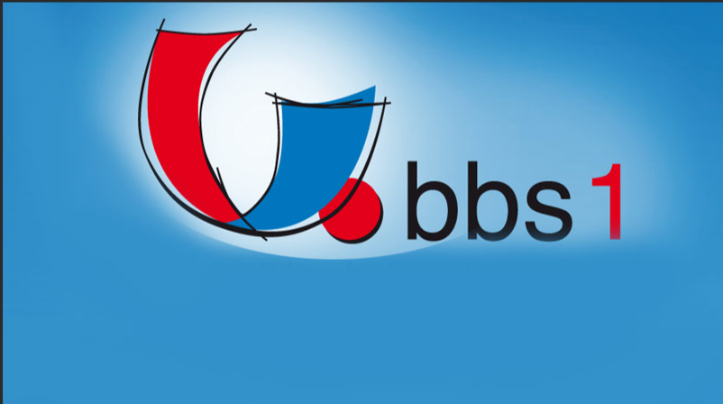

Link

BFS Büro (WHHB)
WHHB1 - Deutsch [Wolthuis_B]
WHHB1 - LF2 - Büroprozesse gestalten und Arbeitsvorgänge organisieren [Albrecht]
WHHB1 - LF04 - Beschaffung und Verträge schließen [Boßmann]
WHHB1 - LF5 - Praxis [Albrecht]
WHHB1 - LF6 - Lernbüro [Boßmann und Albrecht]
WHHB1 - LF07 - Werteströme erfassen und beurteilen [Boltjes]
WHHB1 - LF09 - Bürokommunikation [Lind]
WHHB1- LF1 | LF3 - Grundlagen | Absatz [Albrecht]
WHHB2 - LF01 - Die eigene Rolle im Betrieb mitgestalten und den Betrieb präsentieren [Bruns]
WHHB2 - LF02 - Büroprozesse gestalten und Arbeitsvorgänge organisieren [Lind]
WHHB2 - LF07 - Rechnungswesen 2324 [Elsen]
WHHB2 - LF7 - Wertströme erfassen und beurteilen [Boltjes]